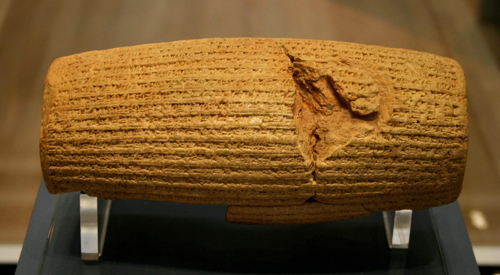
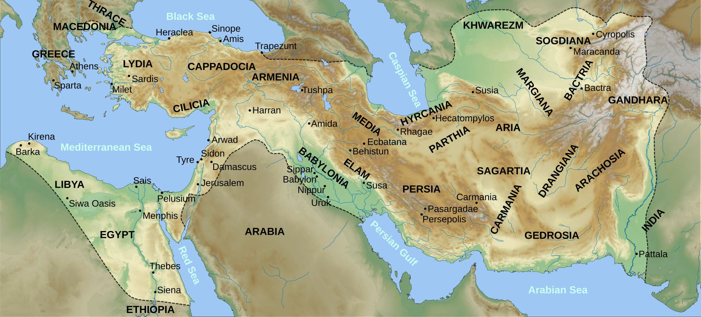
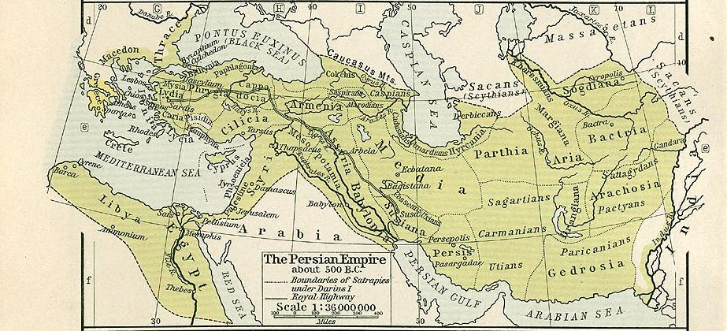

Unit 2 · Persepolis · Lesson 1
The Persian Empire from Cyrus the Great to Darius I
How did three kings build an empire in less than forty years, and why do historians question the third king’s story of how he came to power?
Year 11 Ancient History · Present with → or space · Read on a phone with R

Connect · 5 minutes · everyone writes for 90 seconds · press K for the timer
Who made the Cyrus Cylinder, and why?

From Unit 1, Lesson 8: two lines, from memory. Who made it? Why? Use one precise term.
A Babylonian scribe, presumably on the orders of Cyrus II of Persia, after he captured Babylon in 539 BCE: a foundation inscription, written to be buried in the foundations of Babylon’s city wall.
To present Cyrus as the king chosen by Marduk, Babylon’s own god, so that a foreign conqueror looked like a lawful king. Its first readers were probably Marduk and future kings.
The ‘charter of human rights’ label is a modern, contested representation: the text itself says nothing of human rights.
Connect · the next four weeks · write one question of your own
A new case study: Persepolis
Write one question of your own about Persepolis on your notes page in your booklet. Make it an inquiry question: open (how? why? in what ways? to what extent?), about people and a time, and one sources could answer.
Why did Darius build a new capital instead of using Cyrus’s? · How do we know what Persepolis looked like before it was destroyed? · To what extent was Persepolis a working capital, and not only a ceremonial one?
When was Persepolis built? (closed: one fact answers it)
Learning intentions and success criteria · 2 minutes
Today’s goals
- understand how the Persian Empire grew from Cyrus the Great to Darius I
- explain how Darius came to power and why his account is contested
- put the key events from Cyrus to Darius I in order, with dates
- explain two causes of the empire’s growth
- explain why historians question Darius’s account of 522 BCE
Syllabus outcomes: AH-11-02 proposes ideas about the varying causes and effects of events and developments · AH-11-03 explains the role and significance of forces, features, events, individuals and groups in shaping the past · AH-11-07 communicates historical understanding, applying historical knowledge, terms and concepts. Life Skills: AH-LS-04 recognises causes and effects of events or developments · AH-LS-06 investigates people, events or developments of the ancient world.
Note-making · the same routine as Unit 1
How to structure your notes
questions and key terms, written after
short phrases, arrows (→ leads to), abbreviations (c. = about; BCE = before the Common Era)
- 1A new unit, a new pageYour inquiry question from the Connect at the top; a cue column about a quarter of the page wide; room for a summary.
- 2Listen and look, then writeDon’t copy while a slide is being explained. Phrases, not sentences; dates with every event.
- 3Write your own notes at each ✎ checkpointThen compare with the model notes, one row at a time. Add what you missed in a second colour.
- 4Write the cue questions afterwardsUse exam verbs: explain, analyse, assess. To revise, cover your notes and answer the cues.
- 5Finish with a three-sentence summaryTwo checkpoints today: the empire grows · how Darius became king.
Key vocabulary · start the unit word wall
Words you will use all unit
| Kings and the empire | Meaning |
|---|---|
| Achaemenid | The royal family (and empire) descended, they claimed, from an ancestor called Achaemenes; it ruled Persia from Cyrus the Great to Darius III. |
| Satrapy / satrap | A province of the Persian Empire / the governor who ran it for the king. |
| Tribute | Payment in silver, gold or goods that a subject people made to the king. |
| Accession | The moment a ruler comes to the throne. |
| Magian | One of the Magi, a Median group whose members served as priests. |
| Places and sources | Meaning |
|---|---|
| Fars (Pārsa) | The Persian homeland in south-west Iran, where Persepolis stands. |
| Ecbatana | The capital of the Medes (modern Hamadan), taken by Cyrus; later a Persian royal residence. |
| Pasargadae | Cyrus the Great’s capital in Fars, with palaces in a garden landscape and his tomb. |
| Cuneiform | Wedge-shaped writing pressed into clay or carved in stone, used for Old Persian, Elamite and Babylonian. |
| Trilingual inscription | An inscription written in three languages (at Persepolis usually Old Persian, Elamite and Babylonian). |
1 · The empire grows · I do — an illustrated mini-lecture
Three kings, one growing empire

Find on the map: Persia and Pasargadae · Media and Ecbatana · Lydia and Sardis · Babylon · Egypt and Memphis (‘Menphis’ on this map) · Susa · Persepolis
- 1Cyrus II, ‘the Great’c. 559–530 BCEFrom king of a small Persian kingdom to ruler of an empire: Media (c. 550), Lydia (c. 546), Babylon (539).
- 2Cambyses II, his son530–522 BCEAdds Egypt (525). Away from Persia for years; dies in 522 as a rival king takes power at home.
- 3Darius I522–486 BCETakes the throne in 522; crushes revolts; reorganises the satrapies and fixes tribute; royal roads; begins Persepolis (c. 518).
1 · The empire grows · I do — think aloud · watch how each event becomes a cause
Turning events into causes and effects
| Event (cause) | Connective | Effect |
|---|---|---|
| Cyrus defeats Astyages of Media (c. 550 BCE) | consequently | Cyrus takes over the Median empire and the lands it ruled, such as Armenia, Cappadocia and Parthia |
| Cyrus conquers Lydia (c. 546 BCE) | this enabled | his general Harpagus to conquer the Greek cities of Ionia, which had been Lydia’s subjects |
| Cyrus takes Babylon (539 BCE) | as a result | Persia rules Babylon’s lands in Syria and Palestine, the land route to Egypt: Cambyses conquers Egypt in 525 BCE |
| Cambyses is away in Egypt (525–522 BCE) | this led to | unrest at home: Darius says that “the people became hostile, and the lie multiplied in the land” |
According to Herodotus, because Darius fixed the tribute that each province paid, the Persians called him ‘the merchant’.
We do · sequence → cause: “Cyrus took Babylon in 539 BCE, then a scribe wrote the Cyrus Cylinder.” → Because Cyrus took Babylon as a foreign conqueror, he needed to look like a lawful king, which is why the Cyrus Cylinder, presumably written on his orders, presents him as chosen by Marduk.
1 · The empire grows · I do — Darius’s reforms
Darius reorganises the empire

- 1Revolts crushed (522–519 BCE)Darius claims nine ‘kings’ captured in a single year, Gaumata among them; on the Behistun relief Gaumata lies under his foot and bound captives stand before him.
- 2Satrapies reorganisedProvinces under satraps existed before him; Herodotus says Darius divided the empire into twenty.
- 3Tribute fixedHerodotus says each province now paid a set amount in silver or gold, where Cyrus and Cambyses had received ‘gifts’.
- 4Royal roadsRoad stations along the routes: Herodotus counts 111 from Sardis to Susa, about 90 days’ journey.
- 5A new royal centreThe terrace of Persepolis, begun about 518 BCE in Fars, the Persian homeland.
1 · The empire grows · I do → cold call
‘The father’, ‘the master’, ‘the merchant’
In the reigns of Cyrus and Cambyses after him there was no fixed tribute, but payment was made in gifts. It is because of this fixing of tribute, and other similar ordinances, that the Persians called Darius the merchant, Cambyses the master, and Cyrus the father; for Darius made petty profit out of everything, Cambyses was harsh and arrogant, Cyrus was merciful and always worked for their well-being.
Herodotus, Histories 3.89 · a Greek writer, about 430 BCE, about 90 years after Darius became king · A. D. Godley’s translation (Loeb, 1921), as revised by the Perseus Digital Library · ordinances = rules
What does calling Darius ‘the merchant’ suggest about his reforms?
That they were about money and organisation: in Herodotus’s account, Darius set a fixed tribute for every province, where Cyrus and Cambyses had taken gifts. It also sounds like a complaint: a king who “made petty profit out of everything” was not loved like ‘the father’.
Is the saying better evidence of what Darius did, or of how he was remembered?
Mainly of how he was remembered: a Greek, writing about 90 years later, reports what ‘the Persians’ said. On what he did, it fits Darius’s own claim at Behistun that his lands “brought tribute unto me”.
Notes checkpoint 1 of 2
The empire grows: Cyrus, Cambyses, Darius
2 · How Darius became king · We do — supported reading · read it together, pause at each question
Darius tells how he became king

Images: Patrick C (CC BY-SA 2.0). Full details on the last slide.
1 · What happened to Smerdis? Darius says Cambyses killed his own brother in secret.
2 · What did Gaumata claim? To be Smerdis, the son of Cyrus; then all the people rose in revolt.
3 · Why did no one stop him? Fear: he killed people who had known the real Smerdis.
4 · How does Darius explain his success? The god Ahuramazda helped him and made him king.
[§10] A son of Cyrus, named Cambyses, one of our dynasty, was king here before me. That Cambyses had a brother, Smerdis by name, of the same mother and the same father as Cambyses. Afterwards, Cambyses slew this Smerdis. When Cambyses slew Smerdis, it was not known unto the people that Smerdis was slain. Thereupon Cambyses went to Egypt. … [§11] Afterwards, there was a certain man, a Magian, Gaumâta by name, who raised a rebellion … He lied to the people, saying: ‘I am Smerdis, the son of Cyrus, the brother of Cambyses.’ Then were all the people in revolt … [§13] The people feared him exceedingly, for he slew many who had known the real Smerdis. … There was none who dared to act against Gaumâta, the Magian, until I came. Then I prayed to Ahuramazda; Ahuramazda brought me help. … I, with a few men, slew that Gaumâta, the Magian, … By the grace of Ahuramazda I became king; Ahuramazda granted me the kingdom.
Darius I, Behistun inscription, carved about 520 BCE · Old Persian text, as translated by L. W. King and R. C. Thompson (1907) and adapted by Livius.org · Smerdis = the Greek form of Bardiya, Cyrus’s younger son · Magian = one of the Magi · Gaumâta = Gaumata (Livius marks the long vowel) · slew = killed · Ahuramazda = the god Darius worshipped
2 · How Darius became king · We do — cold call · reliable for what?
What does Darius claim, and why might he need the story?
What does Darius claim happened in 522 BCE?
Cambyses secretly killed his brother Smerdis (Bardiya). A Magian, Gaumata, pretended to be Smerdis and took the throne. No one dared act until Darius, helped by Ahuramazda, killed him and became king.
Why did Darius need this story?
He was not Cyrus’s son: by his own account only a distant relative, and his own father was still alive. Killing a son of Cyrus would make him a usurper; killing an impostor let him claim he had restored the rightful dynasty: “The kingdom that had been wrested from our line I brought back …”
What other explanation fits the evidence?
The man Darius killed was the real Bardiya, son of Cyrus, and ‘Gaumata’ was invented to justify the killing. It fits that the empire accepted this king for months, that rebels rose against Darius across the empire (eight in his first year, by his own count), and that Darius then married two of Cyrus’s daughters (Herodotus 3.88).
The Behistun inscription is reliable for how Darius wanted his accession to be seen, but, on its own, weak evidence of what happened in 522 BCE, because it was carved for the man who gained most from the story and no account from the losing side survives.
Notes checkpoint 2 of 2
How Darius became king: a contested account
Check for understanding · hinge question · hold up your A, B, C or D card on “3, 2, 1, show”
Why do many historians doubt Darius’s account of 522 BCE?
- AIt was carved centuries after the events that it describes
- BIt was carved for the man who gained most from the story
- CIt was the only ancient source to tell the story of Bardiya
- DIt was carved in three languages, so its wording is uncertain
A is wrong: it was carved about 520 BCE, within about two years of the events. C is wrong: Herodotus tells the story too, though he probably repeats the official version. D confuses the form with the content: three languages show who it was meant for, not whether it is true.
3 · Putting it in order · You do · 6 minutes · press K for the timer
Put the eight events in order, with dates
- On the timeline strip in your booklet, put the cards in order, oldest first, with a date for each (use “c.” where the date is approximate).
- Draw an arrow between two events where one caused the other, and label it with a connective.
Use your Notes 1 rows. Dates to match: 559 · 550 · 546 · 539 · 530 · 525 · 522 · 518 BCE.
Which event was the most significant for the growth of the empire? Be ready to justify it.
3 · Putting it in order · check your timeline · cold call before each row
Check your timeline
| When | Event | Cause → effect (examples) |
|---|---|---|
| c. 559 BCE | D · Cyrus becomes king of Anshan | a small Persian kingdom, then subject to the Medes |
| c. 550 BCE | F · Cyrus defeats Astyages, takes Media | → the lands the Medes ruled become Persian |
| c. 546 BCE | H · Cyrus conquers Lydia (Sardis) | → opens the way to the Greek cities of Ionia, which Cyrus’s general Harpagus then takes (the year Lydia fell is debated) |
| 539 BCE | C · Cyrus takes Babylon | → Syria and Palestine: the land route to Egypt |
| 530 BCE | G · Cyrus dies; Cambyses becomes king | Cyrus killed on campaign in Central Asia |
| 525 BCE | A · Cambyses conquers Egypt | → the king away from Persia for years |
| 522 BCE | B · Darius kills ‘Gaumata’, becomes king | → revolts across the empire, crushed by 519 BCE |
| c. 518 BCE | E · Darius begins Persepolis | Why? Your exit ticket |
3 · Putting it in order · You do · 9 minutes · press K for the timer
Write two cause-and-effect sentences
Verb cause and effect: say how one event led to another, not just what came next · Topic the empire’s growth; Darius’s accession · Limits Cyrus to Darius I, one sentence each · Do event → causal connective → effect, with a precise date and term.
- One on the empire’s growth.
- One on Darius’s accession.
Each needs a precise date, a causal connective and a precise term (satrapy, tribute, accession).
Start with “As a result of …, …” or “… This led to …”. Use your timeline and Notes 2.
Add a hedge to your accession sentence: who says so, and how sure can we be?
Because Cyrus captured Babylon in 539 BCE, Babylon’s lands in Syria and Palestine passed to Persia; this enabled his son Cambyses to march along the coast road and conquer Egypt in 525 BCE, which then became a Persian satrapy.
Not a son of Cyrus, and by his own account only a distant relative, Darius needed to justify his accession in 522 BCE; consequently, his Behistun inscription presents the king he killed as an impostor, the Magian Gaumata, an account that many historians treat with caution.
Finish your notes If time · or at home
Summary: three sentences
- How did the empire grow under Cyrus and Cambyses?
- How did Darius reorganise it?
- Why do historians question Darius’s account of 522 BCE?
Cyrus II turned a small Persian kingdom into an empire by taking Media (c. 550 BCE), Lydia (c. 546 BCE) and Babylon (539 BCE), and his son Cambyses added Egypt in 525 BCE. After crushing the revolts that followed his accession in 522 BCE, Darius I reorganised the satrapies, fixed their tribute, developed the royal roads and began Persepolis in about 518 BCE. Historians question his Behistun account because it was carved for the man who gained most from the story, so it is reliable for how Darius wanted to be seen but, on its own, weak evidence of what happened.
Exit ticket · 7 minutes · before you leave
Finish the sentence
Darius needed a new capital because …
A reason tied to today’s evidence. For example: he was a new king who was not Cyrus’s son (only a distant relative, he claimed), whose right to rule was doubted, so a capital of his own, not Cyrus’s Pasargadae, could display his power; or his reorganised empire needed a centre for its court. It is a prediction: Lessons 2 and 3 test it.
Then check yourself against today’s three “I can” statements. Next lesson: before Persepolis, the capitals of Ecbatana and Pasargadae.
Practice and review · 1 of 4 · true, false, justify
True or false? Justify your answer
- 1Cyrus the Great conquered Egypt. False — his son Cambyses conquered Egypt in 525 BCE; Cyrus never invaded it.
- 2Darius I invented the satrapies. False — provinces under satraps probably existed under Cyrus; Darius reorganised them (Herodotus says into twenty) and fixed their tribute.
- 3According to Herodotus, the Persians called Darius ‘the merchant’ because he fixed the tribute. True — Herodotus 3.89: under Cyrus and Cambyses, payment was made in gifts.
- 4The Behistun inscription was carved centuries after Darius became king. False — it was carved about 520 BCE, within about two years of the events of 522 BCE.
- 5Because Herodotus tells a similar story, Darius’s account must be true. False — Herodotus probably drew on the official Persian version, so his agreement is weak corroboration.
- 6The terrace of Persepolis was begun by Darius I in about 518 BCE. True — in Fars, the Persian homeland, after he had crushed the revolts.
Practice and review · 2 of 4 · writing
Write it as a historian
Write one sentence on how Cambyses’s conquest of Egypt affected events in Persia. Use a date and a connective.
Cambyses’s conquest of Egypt in 525 BCE kept him away from Persia for years; as a result, according to Darius, unrest spread at home, and in 522 BCE a rival king seized the throne.
“In 522 BCE Darius kills Gaumata, and the Behistun inscription presented him as an impostor.” Past tense for events; present tense for what a source does.
In 522 BCE Darius killed the man he calls Gaumata, and the Behistun inscription presents him as an impostor. (A model, written for this lesson: the killing is an event; what the inscription does, it still does.)
Finish: “The Behistun inscription is reliable for … but not for … because …”
The Behistun inscription is reliable for the official version of Darius’s accession, but not, on its own, for what happened in 522 BCE, because Darius carved it to justify his own seizure of the throne.
Practice and review · 3 of 4 · extension
Does Herodotus make Darius’s story more reliable?
Now after Cambyses, son of Cyrus, had lost his mind, while he was still in Egypt, two Magus brothers rebelled against him. … this brother was in appearance very like Cyrus’ son Smerdis, whom Cambyses, his brother, had killed; nor was he like him in appearance only, but he bore the same name too, Smerdis.
Herodotus, Histories 3.61, about 430 BCE · A. D. Godley’s translation (Loeb, 1921), as revised by the Perseus Digital Library · the story runs from 3.61 to 3.79
Herodotus and Darius tell a similar story. Does their agreement make the story more reliable, or might Herodotus depend on the official Persian version? Use the dates of both sources.
Herodotus agrees with Darius on the core of the story: Cambyses had his brother Smerdis killed in secret, and a Magian impostor then took the throne. His agreement, however, adds less than it seems. Herodotus wrote about ninety years after the Behistun inscription was carved, as a Greek, and his version differs only in details: he has two Magian brothers, one of whom “bore the same name too, Smerdis”. Darius’s account did not stay on the cliff (an Aramaic copy was found in Egypt), so Herodotus probably heard the official Persian version rather than an independent one. If Herodotus is retelling the official version, his agreement is not independent corroboration: it makes Darius’s story more widely told, not more reliable.
Practice and review · 4 of 4 · cover your notes and answer from memory
Quick checks
- Name Cyrus’s three great conquests, with dates. Media (c. 550 BCE), Lydia (c. 546 BCE) and Babylon (539 BCE).
- What did Cambyses add to the empire, and when? Egypt, in 525 BCE.
- Explain one cause of the empire’s growth. For example: taking Babylon (539 BCE) gave Persia Syria and Palestine, the land route that Cambyses used to conquer Egypt (525 BCE).
- Name three of Darius’s reforms. Any three: satrapies reorganised; tribute fixed; royal roads with road stations; a new royal centre at Persepolis (c. 518 BCE).
- What does Darius claim happened in 522 BCE? That Cambyses had secretly killed his brother Smerdis (Bardiya), that a Magian, Gaumata, pretended to be Smerdis and took the throne, and that Darius, helped by Ahuramazda, killed him.
- Why do historians question Darius’s account? It was carved for the man who gained most from the story, and no account from the losing side survives; some think the man he killed was the real Bardiya.
Sources and credits
Where everything comes from
The Behistun inscription of Darius I, Column 1, §§7–14: translation by L. W. King and R. C. Thompson (1907, public domain), as adapted by Livius.org (© Livius.org; quoted briefly for teaching).
Herodotus, Histories 3.61, 3.88, 3.89 and 5.52–53: A. D. Godley’s Loeb translation (Vols II–III, 1921–22), in the revised version published by the Perseus Digital Library (CC BY-SA 3.0 US). Godley’s printed wording differs in places (at 3.89 he has ‘the huckster’).
Facts: Livius.org (J. Lendering), “Cyrus the Great”, “Cambyses II”, “Darius I the Great” and “Gaumata / Smerdis”; Encyclopaedia Britannica, “Darius I”; British Museum, “Cyrus, King of Persia” and record 90920 (the Cyrus Cylinder); UNESCO World Heritage Centre, “Persepolis” (list no. 114).
Also cited in the lesson notes: Herodotus 1.101, 1.132, 1.141, 1.169, 3.13, 3.64, 3.67, 3.97 and 4.166 (Godley’s printed Loeb, via LacusCurtius); Godley’s footnote at 5.52 quoting W. W. How and J. Wells, A Commentary on Herodotus; L. W. King and R. C. Thompson (1907) on Cambyses’ death; Livius.org, “Behistun” and “Aryandes”; J. Curtis, abstract for the Freer|Sackler Cyrus Cylinder symposium (2013); the British Museum’s statement on the loan of the Cyrus Cylinder (2010).
Outcomes and content: NSW Education Standards Authority (NESA), Ancient History 11–12 Syllabus (2024). © NESA.
- Columns on the terrace at Persepolis · Photo: Forough.Parhoudeh · CC BY-SA 4.0 · source
- The Cyrus Cylinder (British Museum 90920) · Photo: Mike Peel (www.mikepeel.net), modified by مانفی · CC BY-SA 4.0 · source
- Map of the Achaemenid Empire about 500 BCE · Map: Anton Gutsunaev, English version by Uirauna · CC BY-SA 3.0 · source
- The Persian Empire about 500 BCE (Shepherd, 1911) · William R. Shepherd, Historical Atlas (1911) · Public domain · source
- The Behistun relief of Darius I · Photo: Patrick C (dynamosquito on Flickr) · CC BY-SA 2.0 · source


All images are public domain or openly licensed, and were resized for the web. Each is shared under the licence shown.